Introduction
This chapter illustrates how to build Realtek’s SDK under GCC environment. It focuses on both Windows platform and Linux distribution. The build and download procedures are quite similar between Windows and Linux operating systems.
For Windows, Windows 10 64-bit is used as a platform.
For Linux server, Ubuntu 16.04 64-bit is used as a platform.
Preparing GCC Environment
Windows
For Windows, use MSYS2 and MinGW as the GCC environment.
MSYS2 is a collection of tools and libraries providing an easy-to-use environment for building, installing, and running native Windows software.
MinGW is an advancement of the original mingw.org project. It is created to support the GCC compiler on Windows system.
The steps to prepare GCC environment are as follows:
Download MSYS2 from its official website https://www.msys2.org.
Run the installer. MSYS2 requires 64-bit Windows 7 or later.
Enter your desired
Installation Folder(ASCII, no accents, spaces nor symlinks, short path)When done, tick
Run MSYS2 now.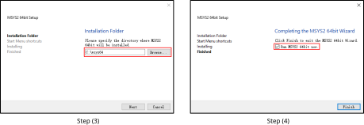
Update the package database and base packages with:
pacman -Syu
When
Proceed with installation? [Y/n]is displayed, typeYand continue until the package installation is done.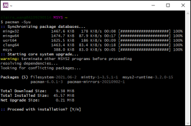
Caution
After installation of MSYS2, there will be four start modes:
MSYS2 MinGW 32-bit
MSYS2 MinGW 64-bit
MSYS2 MinGW UCRT 64-bit
MSYS2 MSYS
Because the toolchain release will base on 64-bit MinGW, choose
MSYS2 MinGW 64-bitwhen starting the MinGW terminal.Run
MSYS2 MinGW 64-bitfromStartmenu. Update the rest of the base packages with:pacman -Syu
When
Proceed with installation? [Y/n]is displayed, typeYand continue until the package installation is done.
Install the necessary software packages with the commands below in order:
pacman –S make pacman –S unzip pacman –S gcc pacman –S python pacman –S ncurses-devel pacman –S openssl-devel pacman -S mingw-w64-x86_64-gcc-libs
When
Proceed with installation? [Y/n]is displayed, typeYand continue until each software package installation is done.Search the needed packages (used to compile TF-M) in and install them as you need with the commands below.
pacman -S diffutils pacman -S vim pacman -S python-pip pacman -S cmake pip install Jinja2
Remove the file path length limit by editing the registry to allow the file paths longer than 260 characters.
Press
Win+Rkeys to open theRundialog box, then typeregeditand pressEnterto open theRegistry Editor.Navigate to the registry key:
Computer\HKEY_LOCAL_MACHINE\SYSTEM\CurrentControlSet\Control\FileSystem.Search and check if the
LongPathsEnableditem exists. If not, continue to Step d; otherwise, go to Step e.Right-click on an empty space in the right pane, then select :, and name it
LongPathsEnabled.Double-click on
LongPathsEnabledand set its value to 1, then clickOKto save.
{kind=link}
{kind=link}
Linux
On Linux, 32-bit Linux is not supported because of the toolchain.
The packages listed below should be installed for the GCC environment:
gcc
libncurses5
bash
make
libssl-dev
binutils
python3
Some of the packages above may have been pre-installed in your operating system. You can either use package manager or type the corresponding version command on terminal to check whether these packages have already existed. If not, make them installed.
$ls -l /bin/sh
Starting from Ubuntu 6.10, dash is used by default instead of bash. You can use
$ls -l /bin/shcommand to check whether the system shell is bash or dash.(Optional) If the system shell is dash, use
$sudo dpkg-reconfigure dashcommand to switch from dash to bash.If the system shell is bash, continue to do the subsequent operations.

$make -v
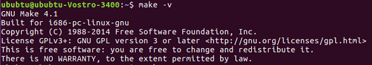
$sudo apt-get install libssl-dev
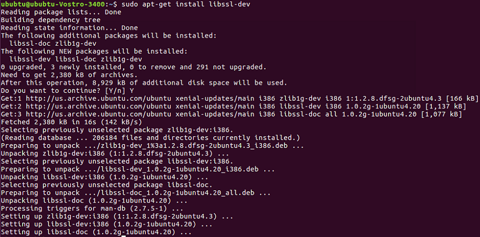
binutils
Use
ld -vcommand to check if binutils has been installed. If not, the following error may occur.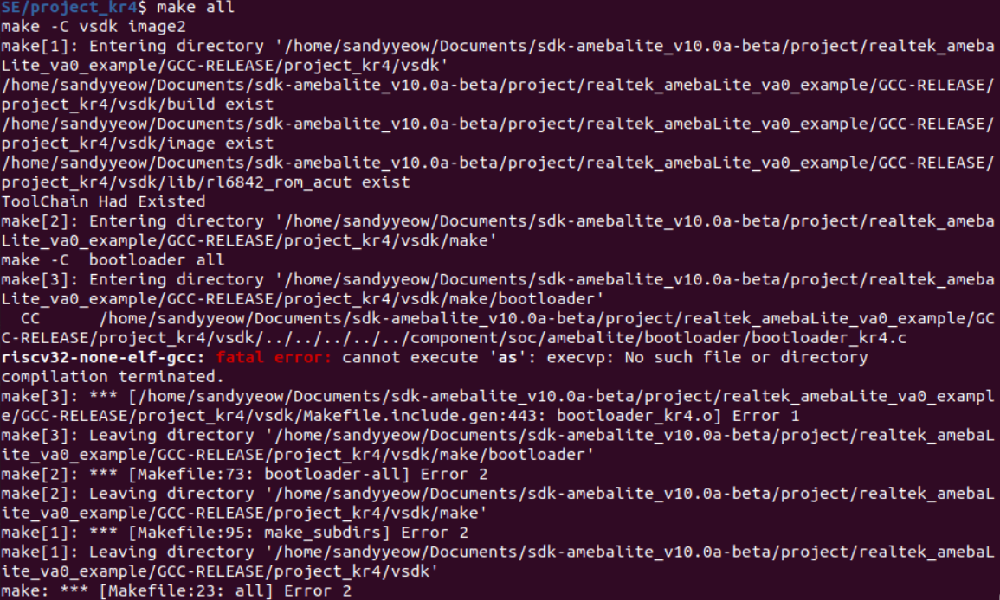
{kind=link}
{kind=link}
{kind=link}
Troubleshooting
MSYS2 pacman is responsible for managing and installing software, which is similar to apt-get in ubuntu. When
bash:XXX:command not foundappears, you can try instructionpacman -S <package_name>to install.For detailed information of one package, try
pacman -Si <package_name>.If system head files are not found when building tool,
No such file or directoryerror will show up. You can trypacman -Fy <FILE_NAME>to check which package is lost, and install the lost package. If too many packages are lost, look for detailed information about the packages to decide which to install.For multi-version python host, command
update-alternatives --install /usr/bin/python python /usr/bin/python3.x 1can be used to select python of specific version 3.x, where x represents a desired version number.If the error
command 'python' not foundappears during compilation, type commandln -s /usr/bin/python3 /usr/bin/pythonfirst to make sure that python3 is used when running python.
Installing Toolchain
Automatical Installation
By default, the toolchain will be automatically installed in /opt/rtk-toolchain when building the project at the first time.
During the compilation, we will check if the toolchain exists and if the version of the toolchain match the lastest version. Once error occurs, you should fix the error according to the prompts on the screen and try again with
make.
The toolchain will be downloaded from GitHub when building the project at the first time. If the download speed from GitHub is too slow or download failed, execute the command
make toolchain URL=aliyunormake toolchain URL=githubfirst to get the toolchain before building the project. We recommend usemake toolchain URL=aliyunto download the toolchain from aliyun to improve the download speed.
The default installation path of the toolchain is
/opt/rtk-toolchain. If you want to change it, modifyTOOLCHAINDIRdefined inMakefile.include.genwhich is located both inproject_km0andproject_km4.
Note
If an error
Create Toolchain Dir Failed. May Not Have Permissionappears, please create the installation directory by manual. If still fails, refer to 3 above to change the installtion path.If an error
Download Failedappears, please check if the network connection is accessible first. If still fails, refer to 2 above to intall the toolchain again.If an error
Current Toolchain Version Mismatchedappears, please delete the current toochain and retry withmake, and the latest toolchain will be installed automatically during building the project.
If the installation still fails, try with the manual installation steps below.
Manual Installation
Windows
This section introduces the steps to prepare the toolchain environment manually.
Acquire the zip files of the toolchain from Realtek.
Create a new directory
rtk-toolchainunder the path{MSYS2_path}\opt.For example, if your MSYS2 installation path is as set in Section Windows Step 3, the
rtk-toolchainshould be inC:\msys64\opt.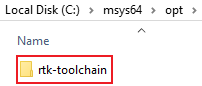
Unzip
asdk-10.3.x-mingw32-newlib-build-xxxx.zipand place the toolchain folderasdk-10.3.xto the folderrtk-toolchaincreated in Step 2.
{kind=link}
Note
The unzip folders should stay the same with the figure above and do NOT change them, otherwise you need to modify the toolchain directory in makefile to customize the path.
Linux
This section introduces the steps to prepare the toolchain environment manually.
Acquire the zip files of the toolchain from Realtek.
Create a new directory
rtk-toolchainunder the path/opt.
Unzip
asdk-10.3.x-linux-newlib-build-xxxx.tar.bz2to/opt/rtk-toolchain, then you can get the directory below:
Note
The unzip folders should stay the same with the figure above and do NOT change them, otherwise you need to modify the toolchain directory in makefile to customize the path.
Configuring SDK
This section illustrates how to change SDK configurations.
User can configure SDK options for KM0 and KM4 at the same time through $make menuconfig command.
Switch to the directory
{SDK}\amebadplus_gcc_projectRun
$make menuconfigcommand on MSYS2 MinGW 64-bit (Windows) or terminal (Linux)
Note
The command $make menuconfig is only supported under {SDK}\amebadplus_gcc_project, but not supported under other paths.
The main configurable options are divided into four parts:
General Config: the shared kernel configurations for KM4 and KM0. The configurations will take effect in both KM4 and KM0.Network Config: the shared kernel configurations for KM4 and KM0. The configurations will take effect in both KM4 and KM0.KM4 Config: the exclusive kernel configurations for KM4. The configurations will take effect only in KM4 but not in KM0.KM0 Config: the exclusive kernel configurations for KM0. The configurations will take effect only in KM0 but not in KM4.
The following figure is the menuconfig UI, and the options in red may be used frequently.
{kind=link}
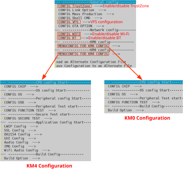
menuconfig UI
User can configure SDK options for KR4 and KM4 at the same time by $make menuconfig command.
Switch to the directory
{SDK}\amebalite_gcc_project.Run
$make menuconfigcommand on MSYS2 MinGW 64-bit (Windows) or terminal (Linux).
Note
$make menuconfig command is only supported under {SDK}\amebalite_gcc_project, but not supported under other paths.
The main configurable options are divided into four parts:
General Config: the shared kernel configurations for KM4 and KR4. The configurations will take effect in both KM4 and KR4.Network Config: the incompatible kernel configurations for KM4 and KR4. Take Wi-Fi processor role as an example, KR4 is AP when KM4 is NP, while KM4 is AP when KR4 is NP. The configurations will take effect in both KM4 and KR4.KM4 Config: the exclusive kernel configurations for KM4. The configurations will take effect only in KM4 but not in KR4.KR4 Config: the exclusive kernel configurations for KR4. The configurations will take effect only in KR4 but not in KM4.
The following figure is the menuconfig UI, and the options in red may be used frequently.

menuconfig UI
User can configure SDK options for KR4 and KM4 at the same time by $make menuconfig command.
Switch to the directory
{SDK}\amebalite_gcc_project.Run
$make menuconfigcommand on MSYS2 MinGW 64-bit (Windows) or terminal (Linux).
Note
$make menuconfig command is only supported under {SDK}\amebalite_gcc_project, but not supported under other paths.
The main configurable options are divided into four parts:
General Config: the shared kernel configurations for KM4 and KR4. The configurations will take effect in both KM4 and KR4.Network Config: the incompatible kernel configurations for KM4 and KR4. Take Wi-Fi processor role as an example, KR4 is AP when KM4 is NP, while KM4 is AP when KR4 is NP. The configurations will take effect in both KM4 and KR4.KM4 Config: the exclusive kernel configurations for KM4. The configurations will take effect only in KM4 but not in KR4.KR4 Config: the exclusive kernel configurations for KR4. The configurations will take effect only in KR4 but not in KM4.
The following figure is the menuconfig UI, and the options in red may be used frequently.
menuconfig UI
User can configure SDK options for KM0/KM4/CA32 at the same time through $make menuconfig command.
Switch to the directory
{SDK}\amebasmart_gcc_project.Run
$make menuconfigcommand on MSYS2 MinGW 64-bit (Windows) or terminal (Linux)
Note
$make menuconfig command is only supported under {SDK}\amebasmart_gcc_project, but not supported under other paths.
The main configurable options are divided into five parts:
General Config: the shared kernel configurations for KM0/KM4/CA32. The configurations will take effect in all CPUs.Network Config: the incompatible kernel configurations for KM4 and CA32. Take Wi-Fi as an example, it can be set to INIC mode (KM4 is NP and CA32 is AP) and single core mode (KM4 is both NP and AP). The configurations will take effect in KM4 and CA32.KM0 Config: the configurations will take effect only in KM0.KM4 Config: the configurations will take effect only in KM4.CA32 Config: the configurations will take effect only in CA32.
The following figure is the menuconfig UI, and the options in red may be used frequently.

menuconfig UI
Building Code
This section illustrates how to build SDK for both Windows and Linux. The following table lists all the GCC project directories of SDK.
GCC project |
Directory |
|---|---|
KM4 |
{SDK}\amebadplus_gcc_project\project_km4 |
KM0 |
{SDK}\amebadplus_gcc_project\project_km0 |
GCC project |
Directory |
|---|---|
KM4 |
{SDK}\amebalite_gcc_project\project_km4 |
KR4 |
{SDK}\amebalite_gcc_project\project_kr4 |
GCC project |
Directory |
|---|---|
KM4 |
{SDK}\amebalite_gcc_project\project_km4 |
KR4 |
{SDK}\amebalite_gcc_project\project_kr4 |
GCC project |
Directory |
|---|---|
CA32 |
{SDK}\amebasmart_gcc_project\project_ap |
KM4 |
{SDK}\amebasmart_gcc_project\project_hp |
KM0 |
{SDK}\amebasmart_gcc_project\project_lp |
Note
Replace the {SDK} with your own SDK directory.
There are two ways to build the SDK, you can choose either of them.
Build One by One
Follow these steps to build the SDK of KM4 and KM0 projects one by one:
Use
$cdcommand to switch to the project directories of SDK on Windows or Linux.For example, you can type
$cd {SDK}\amebadplus_gcc_project\project_km4to switch to the KM4 project, the same operation for the KM0 project.Build SDK under the KM0 or KM4 project directory on Windows or Linux.
For normal image, simply use
$make allcommand to build SDK.For MP image, refer to Section How to Build MP Image to build SDK.
Check the command execution results. If somehow failed, type
$make cleanto clean and then redo the make procedure.For KM4 project, if the terminal contains
target_img2.axfandImage manipulating endmessage (see KM4 project make all), it means that KM4 images have been built successfully. You can find them under\amebadplus_gcc_project\project_km4\asdk\image(see KM4 image generation).
KM4 project make all

KM4 image generation
For KM0 project, if the terminal contains
target_img2.axfandImage manipulating endmessage (see KM0 project make all), it means that KM0 image has been built successfully. You can find it under\amebadplus_gcc_project\project_km0\asdk\image(see KM0 image generation).
KM0 project make all
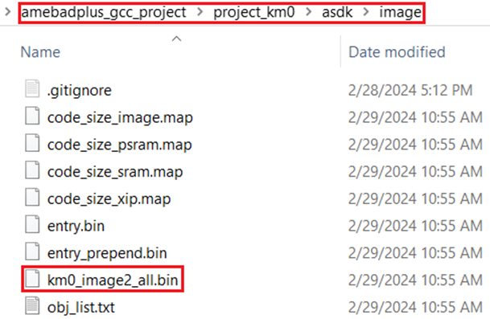
KM0 image generation
{kind=link}
Follow these steps to build the SDK of KM4 and KR4 projects one by one:
Use
$cdcommand to switch to the project directories of SDK.On Windows, open MSYS2 MinGW 64-bit terminal and use
$cdcommand.On Linux, open its own terminal and use
$cdcommand.
For example, you can type
$cd {SDK}\amebalite_gcc_project\project_km4to switch to the KM4 project, the same operation for KR4 project.Build SDK under the KM4 or KR4 project directory on Windows or Linux.
For normal image, simply use
$make allcommand to build SDK.For MP image, refer to Section How to Build MP Image to build SDK.
Check the command execution results. If somehow failed, type
$make cleanto clean and then redo the make procedure.For KM4 project, if the terminal contains
target_img2.axfandImage manipulating endmessages, it means that KM4 images have been built successfully. You can find them underamebalite_gcc_project\project_km4\asdk\image.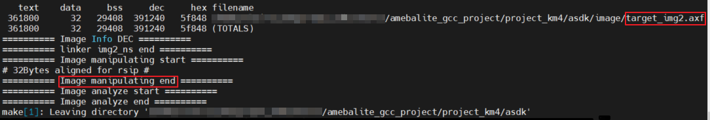
KM4 project make all
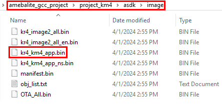
KM4 image generation
For KR4 project, if the terminal contains
kr4_image2_all.binandImage manipulating endmessages, it means that KR4 images have been built successfully. You can find them underamebalite_gcc_project\project_kr4\vsdk\image.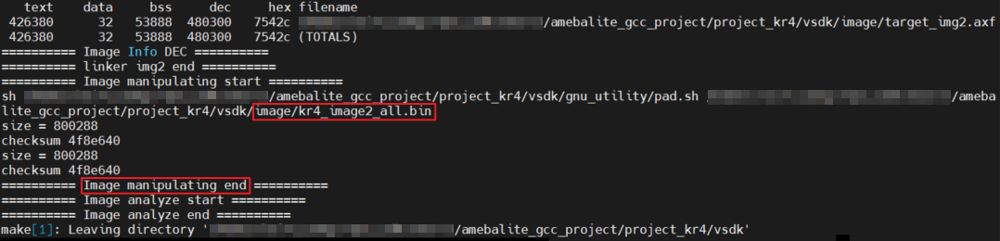
KR4 project make all
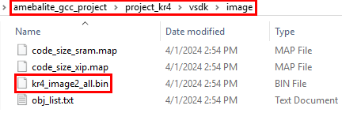
KR4 image generation
{kind=link}
{kind=link}
{kind=link}
{kind=link}
Follow these steps to build the SDK of KM4 and KR4 projects one by one:
Use
$cdcommand to switch to the project directories of SDK.On Windows, open MSYS2 MinGW 64-bit terminal and use
$cdcommand.On Linux, open its own terminal and use
$cdcommand.
For example, you can type
$cd {SDK}\amebalite_gcc_project\project_km4to switch to the KM4 project, the same operation for KR4 project.Build SDK under the KM4 or KR4 project directory on Windows or Linux.
For normal image, simply use
$make allcommand to build SDK.For MP image, refer to Section How to Build MP Image to build SDK.
Check the command execution results. If somehow failed, type
$make cleanto clean and then redo the make procedure.For KM4 project, if the terminal contains
target_img2.axfandImage manipulating endmessages, it means that KM4 images have been built successfully. You can find them underamebalite_gcc_project\project_km4\asdk\image.For KR4 project, if the terminal contains
kr4_image2_all.binandImage manipulating endmessages, it means that KR4 images have been built successfully. You can find them underamebalite_gcc_project\project_kr4\vsdk\image.
Follow the steps below to build the SDK of all the projects one by one:
Use
$cdcommand to switch to the project directories of SDK.On Windows, open MSYS2 MinGW 64-bit terminal and use
$cdcommand.On Linux, open its own terminal and use
$cdcommand.
For example, you can type
$cd {SDK}\amebasmart_gcc_project\project_hpto switch to the KM4 project directory, the same operation for other projects.Build SDK under the project directory on Windows or Linux.
For normal image, simply use
$make allcommand to build SDK.For MP image, refer to Section How to Build MP Image to build SDK.
Check the command execution results. If somehow failed, type
$make cleanto clean and then redo the make procedure.For KM4 project, if the terminal contains
target_img2.axfandImage manipulating endmessages, it means that the images have been built successfully. You can find them under{SDK}\amebasmart_gcc_project\project_hp\asdk\image, as shown in KM4 project make all and KM4 image generation.
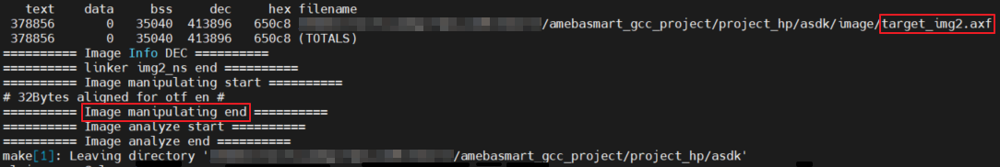
KM4 project make all
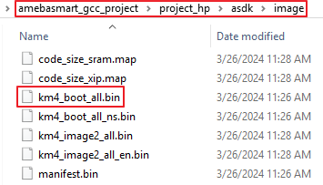
KM4 image generation
For KM0 project, if the terminal contains
target_img2.axfandImage manipulating endmessages, it means that the images have been built successfully. You can find them under{SDK}\amebasmart_gcc_project\project_lp\asdk\image, as shown in KM0 project make all and KM0 image generation.
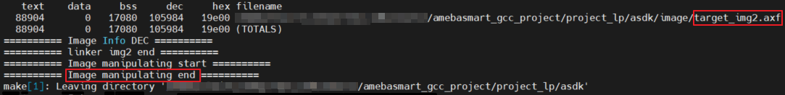
KM0 project make all
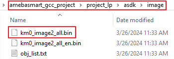
KM0 image generation
For CA32 project, if the terminal contains
fip.binandImage manipulating endmessages, it means that the images have been built successfully. You can find them under{SDK}\amebasmart_gcc_project\project_ap\asdk\image, as shown in CA32 project make all and CA32 image generation.
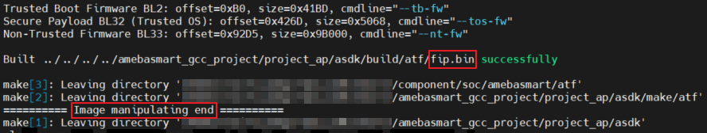
CA32 project make all
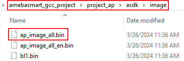
CA32 image generation
{kind=link}
{kind=link}
{kind=link}
{kind=link}
{kind=link}
{kind=link}
Build Together
In order to improve the efficiency of building SDK, you can also execute $make all command once under \amebadplus_gcc_project, instead of executing $make all command separately under the KM0 project and KM4 project.
If the terminal contains
target_img2.axfandImage manipulating endmessage (see KM4 & KM0 projects make all), it means that all the images have been built successfully. The image files are generated under\amebadplus_gcc_project(see KM4 & KM0 image generation). You can also find them under\amebadplus_gcc_project\project_km0\asdk\imageand\amebadplus_gcc_project\project_km4\asdk\image.If somehow failed, type
$make cleanto clean and then redo the make procedure.

KM4 & KM0 projects make all

KM4 & KM0 image generation
Note
If you want to search some .map files for debugging, get them under the directory \amebadplus_gcc_project\project_km0\asdk\image or \amebadplus_gcc_project\project_km4\asdk\image, but not \amebadplus_gcc_project.
In order to improve the efficiency of building SDK, you can also execute $make all command once under {SDK}\amebalite_gcc_project, instead of executing $make all command separately under the KR4 project and KM4 project.
If the terminal contains
target_img2.axfandImage manipulating endmessage, it means that all the images have been built successfully. The images are generated underamebalite_gcc_project. You can also find them underamebalite_gcc_project\project_kr4\vsdk\imageandamebalite_gcc_project\project_km4\asdk\image.If somehow failed, type
$make cleanto clean and then redo the make procedure.

KM4 & KR4 projects make all

KM4 & KR4 image generation
Note
If you want to search some .map files for debugging, get them under the directory amebalite_gcc_project\project_kr4\vsdk\image or amebalite_gcc_project\project_km4\asdk\image, but not amebalite_gcc_project.
In order to improve the efficiency of building SDK, you can also execute $make all command once under {SDK}\amebalite_gcc_project, instead of executing $make all command separately under the KR4 project and KM4 project.
If the terminal contains
target_img2.axfandImage manipulating endmessage, it means that all the images have been built successfully. The images are generated underamebalite_gcc_project. You can also find them underamebalite_gcc_project\project_kr4\vsdk\imageandamebalite_gcc_project\project_km4\asdk\image.If somehow failed, type
$make cleanto clean and then redo the make procedure.
KM4 & KR4 projects make all
KM4 & KR4 image generation
Note
If you want to search some .map files for debugging, get them under the directory amebalite_gcc_project\project_kr4\vsdk\image or amebalite_gcc_project\project_km4\asdk\image, but not amebalite_gcc_project.
In order to improve the efficiency of building SDK, you can also execute $make all command once under {SDK}\amebasmart_gcc_project, instead of executing $make all command separately under each project.
If the terminal contains
target_img2.axfandImage manipulating endmessages (see All projects make all), it means that the images have been built successfully. The images are generated in{SDK}\amebasmart_gcc_project, as shown in KM4 & KM0 & CA32 image generation. You can also find other generated images under\project_hp\asdk\image,\project_lp\asdk\image, and\project_ap\asdk\image.If somehow failed, type
$make cleanto clean and then redo the make procedure.

All projects make all
{kind=link}
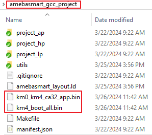
KM4 & KM0 & CA32 image generation
Note
If you want to search some .map files for debug, get them under \project_hp\asdk\image, \project_lp\asdk\image, or \project_ap\asdk\image.